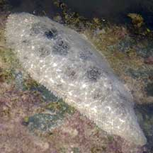
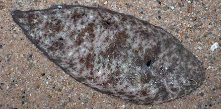
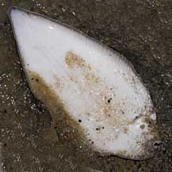
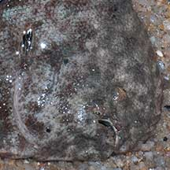
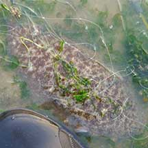
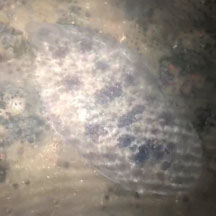
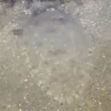

|
|
| fishes text index | photo index |
| Phylum Chordata > Subphylum Vertebrata > fishes > Order Pleuronectiformes > Family Soleidae |
| Oriental
sole Brachirus orientalis Family Soleidae updated Oct 2020 Where seen? This large flattened fish is sometimes seen on some of our shore. Features: Usually 10-12cm, it can grow to 30cm. Eyes on the right side with a small curved mouth. Body oval, it has a tiny pectoral fin on the eyed-side. Dorsal and anal fins joined with the tail fin and uniformly dark. The eyed-side is greyish brown with dark patches. Scales are rough. These bottom-dwelling fishes over 'walk' over the sand by undulating their fins (here's a video). Sometimes confused with other flatfishes. The Large-toothed flounder (Family Paralichthyidae) looks very similar but it is left-eyed. Here's more on how to tell apart the flatfish families commonly seen. |
 Kusu Island, Jul 20 Photo shared by Dayna Cheah on facebook. |
 East Coast Park, Jun 09 |
 Underside: Tail fin joined to the dorsal and anal fins. |
 Eyes on the right side with small curved mouth. |
 Often seen trapped in fishing nets. Changi, Jul 11 |
| What does it eat? Lying buried
in the sand, it preys on bottom dwelling animals especially crustaceans. Human uses: It is eaten in some places and marketed fresh, frozen or dried salted. |
| Oriental soles on Singapore shores |
On wildsingapore
flickr
|
| Other sightings on Singapore shores |
|
|
 Beting Bronok, Jun 24 Photo shared by Kelvin Yong on facebook. |
 Pulau Hantu, Apr 25 Photo shared by Rachael Goh on facebook. |
Links
|